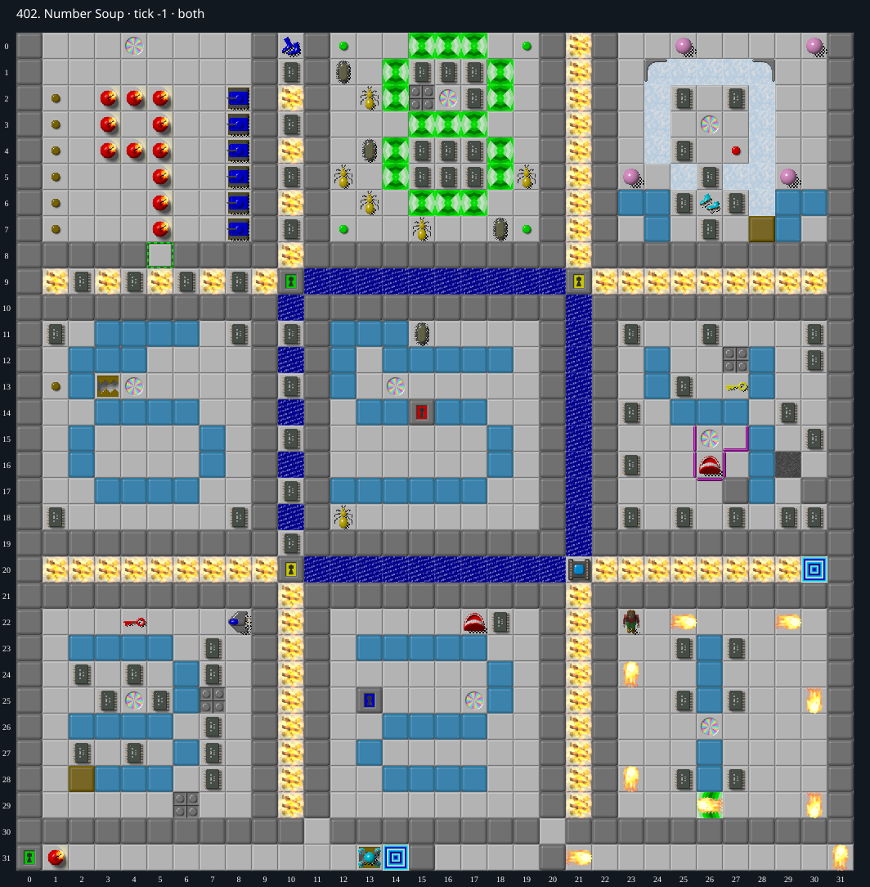

Jacques · Original Tile World MS
402. Number Soup
Impossibility argumentA keyless green door seals at least five needed chips; both exit routes remain closed.
132 chips required · 310 second time limit
Why completion is impossible
- Exactly 136 chips are present and 132 required. There is no green key in either layer.
- The vertical corridor x 10, y 0..8 is bounded by permanent Walls at x 9 and x 11 on every row 0..8, the north board edge, and GreenDoor (10, 9) to the south. Four chips at (10, 1),(10, 3),(10, 5),(10, 7) are inside. A fifth chip lies beneath the green door itself. There is no teleport in this corridor.
- No legal operation can acquire a green key or remove a green door without one. The four interior chips and the buried fifth chip therefore remain inaccessible. At most 131 chips can be collected, less than 132. Additionally chip (6, 24) is under a permanent real blue wall, but that extra deficit is not needed.
- The main exit (30, 20) lies in a horizontal fire corridor closed by Walls above/below/right. Its sole entrance passes Socket (21, 20), which cannot open with the chip deficit.
- The alternate exit (14, 31) has permanent Walls north/east and the board edge south. Its only west neighbor (13, 31) is a glider on Beartrap. No trap control targets that square. The glider is permanently trapped; ordinary blocks and other monsters cannot remove it or push it out, and there is no bomb/cloner/teleport there.
- Thus Chip cannot pass the glider alive to reach the alternate exit, and neither exit is attainable.
Inspect both layers
The main map shows the initial runtime state. Switch to the buried layer to inspect hidden terrain and items. Hover coordinates are also available in the downloadable SVG.


Recorded checks and attempts
- DAT two-layer inventory: Exact DAT metadata/layers decoded; initial production runtime loaded and rendered with repository sprites.
Scope and limitations
- Ordinary legal MS play; cheats and editor changes excluded.
Evidence
- Structured report
- web/src/ruleset-ms/impl/builtinLevelRegistration.ts
- legacy_c/mslogic.c:1002-1011 (bounded cardinal movement)
- legacy_c/mslogic.c:1034-1042 (socket/key requirements)
- legacy_c/mslogic.c:1616-1736 (arrival/terrain effects)
- legacy_c/mslogic.c:1825-1832 (exit completion)
- web/src/ruleset-ms/impl/chipMovement.ts:104-108 (TypeScript completion)
- legacy_c/mslogic.c:1026-1029 (unreleased trap blocks leaving)
- legacy_c/mslogic.c:1037-1042 (socket and door entry gates)
- legacy_c/mslogic.c:1064-1103 (blocks/monsters cannot displace the trapped glider)